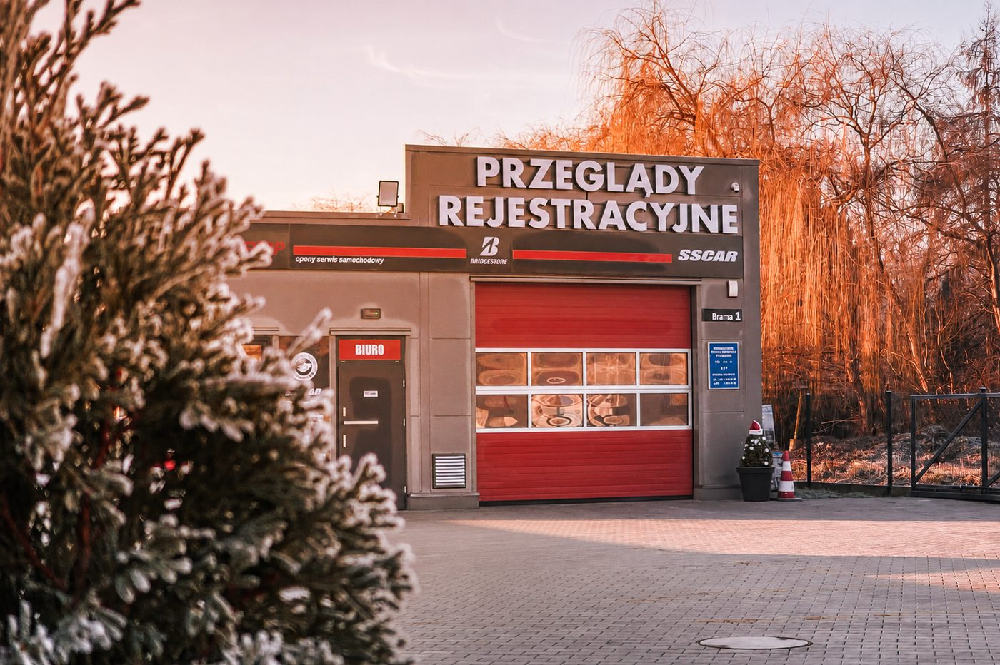

Rezerwacja
O nas
Oferta
Cennik
Dekoder VIN
Baza Klimatyzacji
Kontakt

Diagnostyka | Geometria 3D | Klimatyzacja | Wulkanizacja
Rezerwacja
SKP: 796 995 620
Opony: 609 995 620
Nasze usługi
01
Badania techniczne Wrocław
Przeglądy rejestracyjne aut osobowych, ciężarowych, taxi, motocykli i LPG
→
02
Geometria 3D i zbieżność kół
Pomiar i regulacja kątów ustawienia kół na urządzeniu HANWAY HWAV28
→
03
Serwis klimatyzacji
Nabijanie czynnika R134A i R1234YF, kontrola szczelności, odgrzybianie
→
04
Wulkanizacja i wymiana opon
Wymiana i wyważanie kół, naprawa ogumienia, sezonowa zmiana opon
→
05
Sprawdzenie auta przed zakupem
Kompletna inspekcja używanego samochodu przed transakcją
→
06
Badania powypadkowe
Badanie dodatkowe wymagane po uszkodzeniu elementów nośnych pojazdu
→
Kontakt
Dane kontaktowe
Skontaktuj się
Adres
ul. Polanowicka 82
51-180 Wrocław
Stacja Kontroli Pojazdów
796 995 620
Wulkanizacja (Opony)
609 995 620
Email
skpolanowice@gmail.com
Facebook
Diagnosta z Posta
Godziny otwarcia:
Poniedziałek – Piątek:
07:00 – 20:00
Sobota:
08:00 – 14:00